Practicum Process Technology
Introduction to Python Scientific Programming
Introduction
Welcome to the “Introduction to Python Scientific Programming for Practicum Process Technology”!
This course is designed to equip you with the fundamental skills and knowledge needed to effectively use Python for scientific computing and data analysis in the context of Practicum Process Technology course.
About the lecturers
Mattia Galanti
Eindhoven University of Technology (TU/e)
📧 m.galanti@tue.nl
🏢 STW 0.35, Helix Building
Dr. Ivo Roghair
Eindhoven University of Technology (TU/e)
📧 i.roghair@tue.nl
🏢 STW 0.37, Helix Building
Feel free to reach out via email for any questions or assistance related to the course.
What will we do in this crash course?
In this crash course, we will cover the following topics:
- Quick refresh about Python and scientific libraries (10-15 minutes)
- Modeling of dynamic systems, ODEs and Python implementations (45 minutes)
- Fitting models to data and parameter estimation (30 minutes)
- Hands-on exercises and real-world examples
By the end of this course, you will have a solid foundation in Python programming for scientific applications, enabling you to tackle the challenges you’ll find in the rest of the Practicum Process Technology course.
Why Python?
Python is a versatile and powerful programming language widely used in scientific computing and data analysis. Here are some reasons why Python is an excellent choice:
- Ease of Learning: Python has a simple and readable syntax, making it accessible for beginners.
- Extensive Libraries: Python has a rich ecosystem of libraries such as NumPy, SciPy, and Matplotlib that facilitate scientific computing and data visualization.
- Community Support: Python has a large and active community, providing ample resources, tutorials, and forums for learning and troubleshooting.
- It’s Free 😎: Python is open-source and free to use, making it accessible to everyone.

Learn more: Python Data Science Handbook by Jake VanderPlas
How to program in Python?
In this course, we will primarily use Jupyter Notebooks for coding and exercises. Jupyter Notebooks provide an interactive environment that allows you to combine code, text, and visualizations in a single document.
You can run Jupyter Notebooks locally on your computer using Anaconda or use cloud-based platforms such as Google Colab.
Follow the instructions provided in the course materials to set up your Python environment and get started with Jupyter Notebooks.
Any problems?
Given the time limitations, I won’t address python installation and setup questions during the session. Following the setup instructions provided in the course materials is mandatory. Feel free to ask after class.
Let’s get started!
Python Recap
This section provides a brief recap of essential Python concepts and libraries that will be useful throughout the course.
You may be already be familiar with these topics, but this serves as a quick refresher.
- Native Data Structures
- Control Structures and Functions
- Classes and Object Oriented Programming (OOP)
Native Data Structures
Python offers several built-in data structures that are fundamental for programming:
Lists: Ordered, mutable collections of items.
Example:
Lists can be heterogeneous (contain elements of different types), but whenever possible it’s best to keep them homogeneous (containing elements of the same type) for easier processing and compatibility with libraries like NumPy.
Native Data Structures
Python offers several built-in data structures that are fundamental for programming:
Tuples: Ordered, immutable collections of items.
Example:
Use tuples when you want to ensure that the data cannot be modified after creation, or to group related but different types of data together.
Caution
Tuples are immutable! Once created, you cannot change their values.
--------------------------------------------------------------------------- TypeError Traceback (most recent call last) Cell In[105], line 2 1 my_tuple = (1, 2, 3) ----> 2 my_tuple[0] = 10 TypeError: 'tuple' object does not support item assignment
Native Data Structures
Python offers several built-in data structures that are fundamental for programming:
Dictionaries: Key-value pairs for storing data.
Control Structures and Functions
Control structures and functions are essential for controlling the flow of a program and organizing code into reusable blocks.
Control Structures and Functions
Control structures and functions are essential for controlling the flow of a program and organizing code into reusable blocks.
For Loops:
Iterating over sequences (like lists or ranges).
Iteration 0
Iteration 1
Iteration 2
Iteration 3
Iteration 4Control Structures and Functions
Control structures and functions are essential for controlling the flow of a program and organizing code into reusable blocks.
Control Structures and Functions
Control structures and functions are essential for controlling the flow of a program and organizing code into reusable blocks.
Functions:
Reusable blocks of code that perform a specific task.
Hello, Mattia, nice to see you again!Functions help in organizing code, improving readability, efficiency, and avoiding repetition.
Important
They are going to be extensively used throughout this course, so make sure you are comfortable with them.
Refresh your knowledge on functions:
Python Functions
Defining Your Own Python Function
Classes:
Sometimes, you may end up with many functions and data that are related to each other. In such cases, it is often useful to group them together into a single unit called a class.
A class is a blueprint for creating objects that share common properties and behaviors.
class Cat:
def __init__(self, name, age, color):
self.name = name
self.age = age
self.color = color
self.cuteness_level = 999999999999
def purr(self):
print("Purr... 😺💤")
return
def scratch(self):
print("Scratch! 😾💢")
return
def unleash_cuteness(self):
print("Awwwwwwwwwww!! SOOOO CUTE!!! 😻✨💖")
return
my_cat = Cat("Arturo", 2, "Gray")
my_cat.purr()
my_cat.scratch()
my_cat.unleash_cuteness()Purr... 😺💤
Scratch! 😾💢
Awwwwwwwwwww!! SOOOO CUTE!!! 😻✨💖Is it necessary to use classes?
- Classes are the foundation of object-oriented programming (OOP), used to group related data and behavior.
- They help in organizing, maintaining, and modularizing the code, especially in large projects.
- Most modern Python libraries (e.g.,
NumPy,pandas,TensorFlow) rely heavily on classes. Understanding them helps you navigate and extend such frameworks.
- In this course, you’re free to use functions and native data structures as much as you want. However, learning about classes will be beneficial for your overall programming skills. Therefore, we encourage you to explore and understand them as you progress through the course.
Learn more about classes:
The power of classes
Object-oriented programming in Python
Essential Libraries: NumPy and Matplotlib
Empower your Python workflow with two of the most essential libraries for scientific computing and data visualization.
Together, these libraries form the foundation of modern scientific programming in Python.

If you need a refresher, check out these guides:
NumPy: the absolute basics for beginners
Matplotlib quick start guide
NumPy
NumPy is the fundamental package for scientific computing in Python. It provides multidimensional array objects, efficient and high-performance computations, mathematical functions, and other tools for working with arrays.
import numpy as np
Tip
If you have doubts when programming with NumPy, check out the NumPy User Guide for comprehensive explanations and examples. In alternative, ask ChatGPT for a quick help!
Key Features
ndarray
A powerful n-dimensional array object that allows for efficient storage and manipulation of large datasets.
1D array shape: (5,)
2D array shape: (2, 3)
3D array shape: (2, 2, 2)If you need a refresher, check out these guides:
NumPy: the absolute basics for beginners
Key Features
ndarray
A powerful n-dimensional array object that allows for efficient storage and manipulation of large datasets.
import numpy as np
array_1d = np.array([1, 2, 3, 4, 5])
array_2d = np.array([[1, 2, 3], [4, 5, 6]])
array_3d = np.array([[[1, 2], [3, 4]], [[5, 6], [7, 8]]])
print(f"1D array shape: {array_1d.shape}")
print(f"2D array shape: {array_2d.shape}")
print(f"3D array shape: {array_3d.shape}")
print(array_1d[2])
print(array_2d[1, 0])
print(array_3d[0, 1, 1])
print(array_3d[:, 0, :]) 1D array shape: (5,)
2D array shape: (2, 3)
3D array shape: (2, 2, 2)
Accessing 1D array: 3
Accessing 2D array: 4
Accessing 3D array: 4
Accessing multiple dimensions in 3D array: [[1 2]
[5 6]]If you need a refresher, check out these guides:
NumPy: the absolute basics for beginners
Key Features
Vectorized Operations
NumPy performs element-wise operations on entire arrays, eliminating explicit Python loops and providing major speed-ups.
Sum: [11 22 33 44 55]
Product: [ 10 40 90 160 250]
Squared: [ 1 4 9 16 25]If you need a refresher, check out these guides:
NumPy: the absolute basics for beginners
Key Features
Broadcasting
An (overpowered) mechanism that allows NumPy to perform operations on arrays of different shapes in a way that is both efficient and intuitive. Every operation happens element-wise and in C-optimized code.
Result of Broadcasting Addition:
[[11 22 33 44]
[15 26 37 48]
[19 30 41 52]]Broadcasting allows NumPy to automatically expand the smaller array (b) across the larger array (A) so that they have compatible shapes for element-wise operations.
Learn more about broadcasting here:
Learn NumPy broadcasting in 6 minutes! from youTube channel Bro Code
NumPy Broadcasting Explained: The Complete Guide for Beginners and Data Enthusiasts from Medium.com, Rohan Mistry
Key Features
Mathematical Functions
A wide range of mathematical functions for performing operations on arrays, including linear algebra, statistical analysis, and more.
Mean: [3. 8.]
Standard Deviation: [1.41421356 1.41421356]
Sum: [15 40]
Exponential: [[2.71828183e+00 7.38905610e+00 2.00855369e+01 5.45981500e+01
1.48413159e+02]
[4.03428793e+02 1.09663316e+03 2.98095799e+03 8.10308393e+03
2.20264658e+04]]Tip
When working with multidimensional arrays, you can specify the axis along which to perform the operation using the axis parameter in functions like np.sum(), np.mean(), etc.
If you need a refresher, check out these guides:
NumPy: the absolute basics for beginners
Key Features
Integration with Other Libraries
NumPy serves as the foundation for many other scientific computing libraries in Python, such as SciPy, pandas, and scikit-learn.
Important
Be sure to be familiar with NumPy, since it’s the backbone of scientific computing in Python!
If you need a refresher, check out these guides:
NumPy: the absolute basics for beginners
Matplotlib
Matplotlib is a comprehensive library for creating static, animated, and interactive visualizations in Python. It provides a wide range of plotting capabilities, allowing you to create high-quality graphs and charts for data analysis and presentation.
from matplotlib import pyplot as plt
import matplotlib.pyplot as plt
Matplotlib Basics
Matplotlib lets you visualize data with just a few lines of code.
import numpy as np
from matplotlib import pyplot as plt
# Generate data
x = np.linspace(0, 10, 100)
y1 = np.sin(x)
y2 = np.cos(x)
fig, ax = plt.subplots(figsize=(10, 6))
ax.plot(x, y1, label='Sin(x)', color='blue', linewidth=2)
ax.plot(x, y2, label='Cos(x)', color='red', linewidth=2)
ax.fill_between(x, y1, y2, alpha=0.2)
ax.set_title('Trigonometric Functions')
ax.set_xlabel('x')
ax.set_ylabel('y')
ax.legend()
ax.grid(True)
plt.show()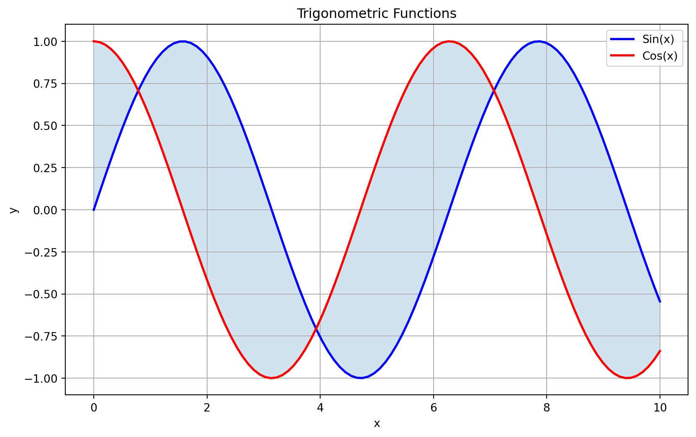
Matplotlib in Action
Matplotlib supports rich styling: color maps, transparency, annotations, and more. Perfect for high-quality visual analysis!
import numpy as np
import matplotlib.pyplot as plt
# Generate synthetic data
np.random.seed(0)
x = np.linspace(0, 10, 200)
y = np.sin(x) + np.random.normal(0, 0.2, size=x.size)
colors = y # color by value
sizes = 80 * np.abs(y) + 10 # scale by magnitude
plt.figure(figsize=(8, 5))
scatter = plt.scatter(x, y, c=colors, s=sizes, cmap="viridis", alpha=0.8, edgecolors="k")
# Add a colorbar and labels
plt.colorbar(scatter, label="y value")
plt.title("Fancy sine function with noise", fontsize=14, pad=10)
plt.xlabel("x", fontsize=12)
plt.ylabel("y", fontsize=12)
# Add a highlight annotation
idx = np.argmax(y)
plt.scatter(x[idx], y[idx], color="red", s=200, edgecolors="white", zorder=3)
plt.annotate("Peak!", (x[idx], y[idx]), textcoords="offset points", xytext=(15,10), color="red", fontsize=12)
plt.grid(alpha=0.3)
plt.tight_layout()
plt.show()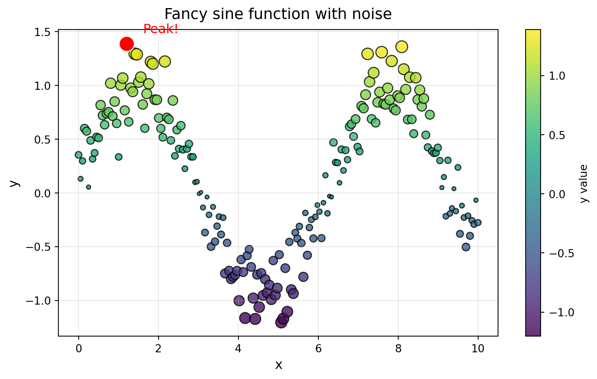
An Introduction to Ordinary Differential Equations
This section aims to provide a foundational understanding of Ordinary Differential Equations (ODEs), their significance in various fields, and how to solve them using Python.
Dynamical Systems
Every system that evolves over time can be described as a dynamical system.
The word dynamical comes from the Greek δύναμις (dýnamis), which means power, potential, or capacity to act. So dynamical literally refers to something in the process of becoming, something that has the power to change.

“The more you know, the more you realize you don’t know.” - Aristotle Image generated with chatGPT
Why Dynamical Systems Matter
If you think about it, almost every process in nature and engineering changes with time, therefore following the rules of change.
These rules tell us not what is, but what will be next.
Therefore, these rules will allow us to predict the future, given we know the present.
The System State
We start with a simple idea: everything changes with time.
At any moment, a system has a state (its position, temperature, or concentration) and this state evolves continuously.
Mathematically, we can describe the state as a vector:
\[ \mathbf{x}(t) = \begin{bmatrix} x_1(t) \\[4pt] x_2(t) \\[2pt] \vdots \\[2pt] x_n(t) \end{bmatrix} \]
and the rule of change as:
\[ \frac{d\mathbf{x}}{dt} = F(\mathbf{x}, t) \]
where \(F\) describes how the state changes over time.
Given \(\mathbf{x}(t_0)=\mathbf{x}_0\) and \(F(\mathbf{x}, t)\) we can predict the system’s future evolution.
We’ve written an Ordinary Differential Equation.
What are ODEs?
ODEs are the mathematical representation of these rules of change. They relate a function (the state of the system) to its derivatives (the rates of change of the system).
They’re astonishingly powerful.

We define the initial value problem (IVP) for an ODE as: \[ \frac{d\mathbf{x}}{dt} = F(\mathbf{x}, t), \quad \mathbf{x}(t_0) = \mathbf{x}_0 \]
ODEs and Condition of existence and uniqueness
For an ODE to have a unique solution, certain conditions must be met.
These conditions are often related to the continuity and differentiability of the functions involved, explained in the Existence and Uniqueness Theorem (Picard-Lindelöf theorem):
Existence and Uniqueness Theorem (Picard–Lindelöf)
Consider the initial value problem
\[ \dot{x} = f(x), \quad x(0) = x_0. \]
Suppose that \(f(x)\) and \(f'(x)\) are continuous on an open interval \(R\) of the x-axis, and suppose that \(x_0\) is a point in \(R\).
Then the initial value problem has a solution \(x(t)\) on some time interval \((- \tau, \tau)\) about \(t = 0\), and the solution is unique.
This theorem says that if \(f(x)\) is smooth enough, then solutions exist and are unique.
(Even so, there’s no guarantee that solutions exist forever..)
If you want to read more about it, check Encyclopedia of Mathematics
Linear ODEs
A linear ordinary differential equation (ODE) is one that can be written in the form:
\[ a_n(t)\,\frac{d^n y}{dt^n} + a_{n-1}(t)\,\frac{d^{n-1} y}{dt^{n-1}} + \dots + a_1(t)\,\frac{dy}{dt} + a_0(t)\,y = g(t) \]
where the coefficients \(a_i(t)\) and the forcing term \(g(t)\) are known functions of the independent variable \(t\).
Key properties
- The dependent variable \(y\) and its derivatives appear only to the first power.
- \(y\) and its derivatives are not multiplied together.
- Usually, can be solved analytically
- Superposition holds:
if \(y_1\) and \(y_2\) are solutions of the homogeneous equation, then \(c_1 y_1 + c_2 y_2\) is also a solution.
Nonlinear ODEs
A non-linear ODE involves terms that are nonlinear functions of \(y\) or its derivatives,
for example, \(y^2\), \(y\,\frac{dy}{dt}\), or \(\sin(y)\).
Nonlinear equations often describe richer and more complex dynamics (e.g., oscillations, bifurcations and chaos).
Typically cannot be solved analytically and must be studied using numerical methods or approximations.
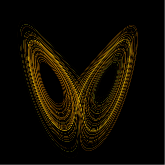

\[ \frac{du}{dt} = \frac{1}{\tau} \left(u_{in} - u\right) + k\,u \]
\[ \frac{d^2 \theta}{dt^2} + \sin(\theta) = 0 \]
Linear vs. Nonlinear
“Most of everyday life is nonlinear, and the principle of superposition fails spectacularly.” - Steven Strogatz
Solving ODEs Numerically
Imagine you have a first-order ODE of the form: \[ \frac{d\theta}{dt} = \sin(\theta) \]
with an initial condition \(\theta(t=0) = \theta_0\).
Imagine \(\theta\) represents the angular position of a particle moving along a line over time \(t\).
Knowing the rule of change, specifically \(\frac{d\theta}{dt}\), already allows us to predict the particle’s future behaviour without using any integrals!
The power of knowing the derivative
The phase-space
By knowing the derivative \(\frac{d\theta}{dt} = \sin(\theta)\), we can analyze the system’s behavior in phase space:
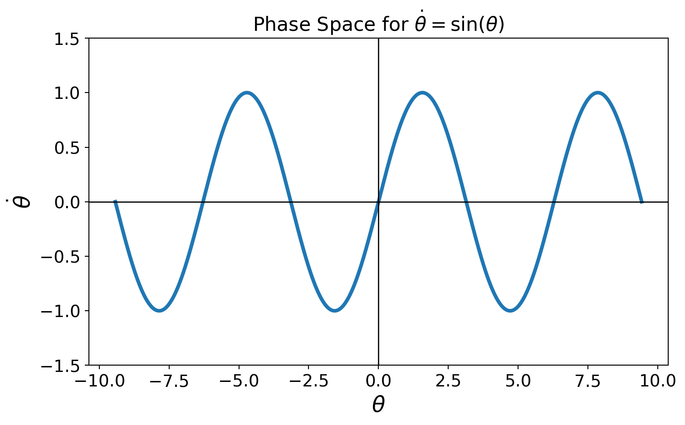
The power of knowing the derivative
The phase-space
By knowing the derivative \(\frac{d\theta}{dt} = \sin(\theta)\), we can analyze the system’s behavior in phase space:
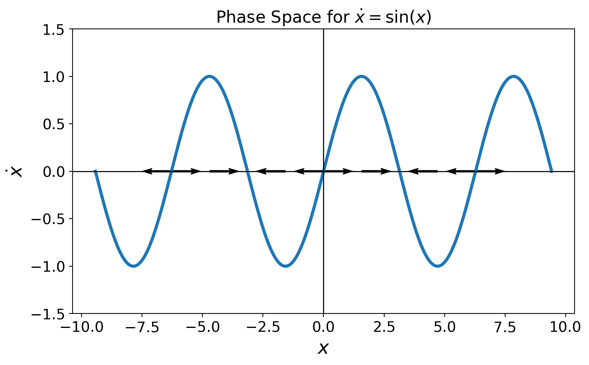
The power of knowing the derivative
The phase-space
By knowing the derivative \(\frac{d\theta}{dt} = \sin(\theta)\), we can analyze the system’s behavior in phase space:
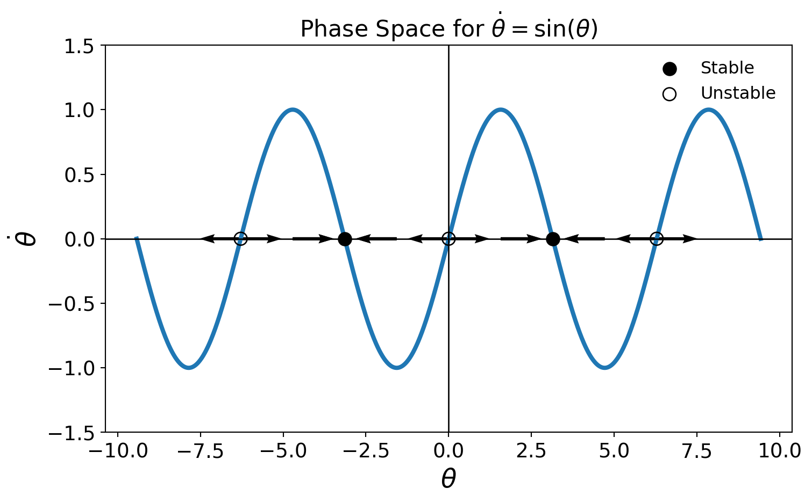
Important
Intuition: knowing the derivative allows us to predict the system’s behavior without solving the ODE explicitly!
Euler’s Method
We were able to predict the system’s behavior qualitatively by analyzing the phase space.
Similarly, to obtain a quantitative solution, we can use the same intuituion to approximate the solution numerically using Euler’s Method.

The idea behind Euler’s Method
We know the differential equation describes a velocity field:
\[ \frac{dx}{dt} = f(x) \]
At each point \(x\), the function \(f(x)\) tells us how fast and in which direction \(x\) changes.
If we start from \(x_0\) at \(t_0\), and move a small time step \(\Delta t\), the displacement is approximately the local velocity times \(\Delta t\):
\[ x(t_0 + \Delta t) \approx x_0 + f(x_0)\,\Delta t \]
Iterating the idea
By repeating the same reasoning step-by-step, we generate a sequence:
\[ x_{n+1} = x_n + f(x_n)\,\Delta t \]
Each step uses the current slope to estimate the next position.
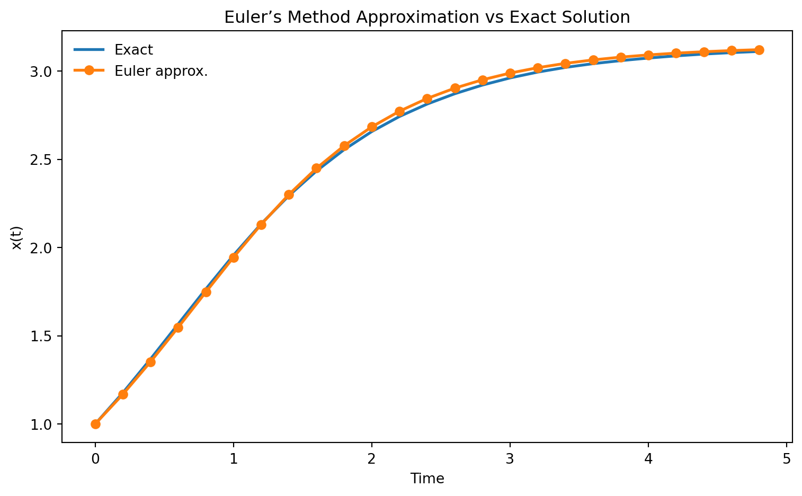
However…
- The accuracy of Euler’s method depends on the step size \(\Delta t\).
- When you have different time scales in the system, Euler’s method may require impractically small step sizes to maintain stability and accuracy.
Numerically, an ODE is considered stiff if it exhibits behavior on vastly different time scales, making it challenging for standard numerical methods to solve efficiently.
Note
In chemical engineering, stiff equations are the standard rather than the exception, often arising from reaction kinetics and transport phenomena.
Example: stiffness and step size
Let’s test the Euler method on a stiff ODE:
\[ \dot{x} = -15 \, x \]
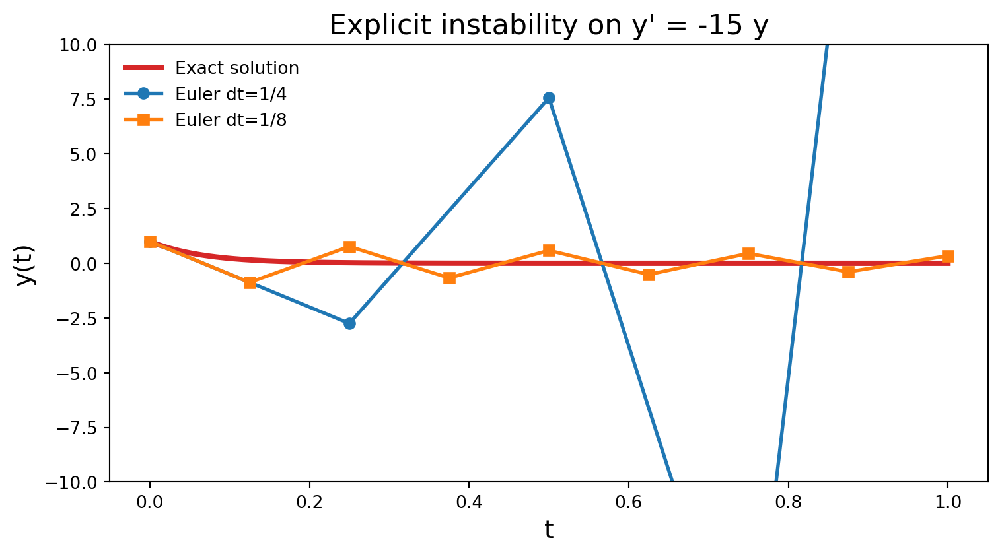
- Don’t be fooled by the seemingly simple ODE!
- With a large step size (e.g., \(\Delta t = 1/4\)), the Euler method produces wildly oscillating and diverging results.
- We need different numerical methods designed to handle stiffness effectively.
Tip
Don’t use Euler scheme.
The example was taken from Wikipedia. Check out the full article on Stiff equations for more details!
Many ways to integrate ODEs
When integrating ODEs, different schemes are suited for different regimes:
🧮 Runge–Kutta (RK45)
- Explicit → fast, accurate for non-stiff systems
- Works best when all time scales are similar
⚙️ BDF (Backward Differentiation Formula)
- Implicit → robust for stiff systems
- Ideal for chemical kinetics, heat transfer, adsorption dynamics
🔀 LSODA
- Hybrid → automatically switches between explicit (Adams) and implicit (BDF)
- Detects stiffness during runtime
- Excellent default if stiffness is uncertain
Solving ODEs with Python
This section will explain how python can be easily used to solve any ordinary differential equations system, regardless of its complexity.
Solving ODEs with Python
Python offers several libraries for solving ODEs, with SciPy being one of the most popular.
The scipy.integrate module provides the function solve_ivp that can be used to numerically solve ODEs in the Initial Value Problem formulation.
Let’s take a look at SciPy’s
solve_ivp!

Check out SciPy for more details.
Scipy and solve_ivp
The solve_ivp function can handle both stiff and non-stiff systems and offers various integration methods.
Solving an ODE with solve_ivp typically involves the following steps:
Define the IVP problem: Define the ODE system and initial conditions.
Implement the ODE system: Write a function that computes and returns the derivatives.
Setup and call
solve_ivp: Specify the time span, initial conditions, and method.Extract and analyze the results.
import scipy.integrate as spi
from scipy.integrate import solve_ivp
You can follow me along in the population_balance_students.ipynb notebook!
1. Define the IVP problem
Consider a population of rabbits N.
The population grows at a rate proportional to its current size, and also proportional to the available resources, which decrease as the population increases. This can be modeled with the following ODE:
\[ \frac{dN}{dt} = rN\left(1 - \frac{N}{K}\right) \]
where:
- r is the intrinsic growth rate,
- K is the carrying capacity of the environment.
- \(N(0)\) = \(N_0\) is the initial population size.
2. Implement the ODE system
We can implement the ODE system in Python as follows:
3. Setup solve_ivp
Let’s set up the parameters and initial conditions for our simulation:
import numpy as np
import matplotlib.pyplot as plt
from scipy.integrate import solve_ivp
def rabbit_population(t, y, r, K):
dydt = r * y * (1 - y / K)
return dydt
r = 0.1 # growth rate [1/s]
K = 100 # carrying capacity [individuals]
y0 = [10] # initial population [individuals]
t_span = (0, 100) # time span for the simulation [s]
t_eval = np.linspace(t_span[0], t_span[1], 100)
method = 'RK45' # integration method4. Call solve_ivp
Now we can call the solve_ivp function to solve the ODE:
Doubts about the function arguments? Check the official documentation for more details.
5. Extract and analyze results
Finally, we can plot the results to visualize the rabbit population growth over time:
solution = solve_ivp(rabbit_population,
t_span,
y0,
args=(r, K),
t_eval=t_eval,
method=method)
sol_time = solution.t
sol_y = solution.y[0]
plt.plot(sol_time, sol_y, label='Rabbit Population', linewidth=2)
plt.plot(0, y0, 'ro', label='Initial Population')
plt.hlines(K, colors='g', linestyles='--', label='Carrying Capacity (K)', xmin=t_span[0], xmax=t_span[1])
plt.title('Rabbit Population Growth Over Time')
plt.xlabel('Time')
plt.ylabel('Population')
plt.legend()
plt.grid()
plt.show()Doubts about the function arguments? Check the official documentation for more details.
Results
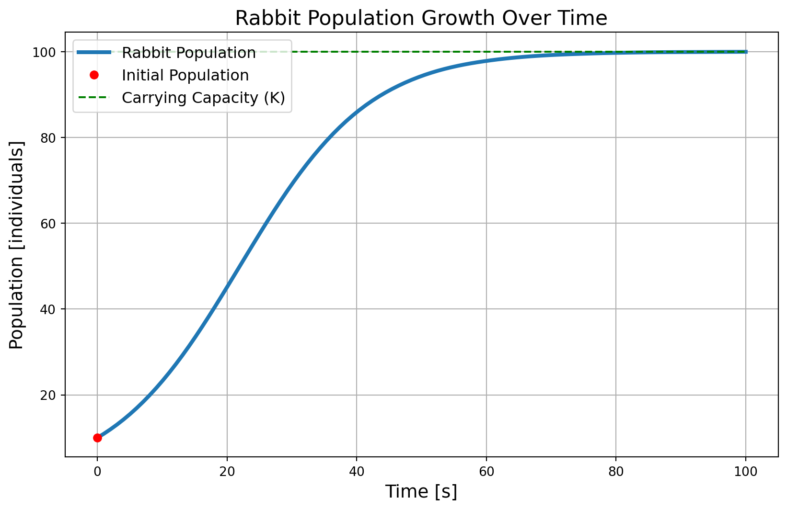
- Maybe not very realistic for rabbits, but still a good example of how to use
solve_ivp!
Now you try!
- Open the population_balance_students.ipynb and go to the section “Your turn!”.
- Play around with different parameters for r, K, and N₀.
- Modify the code such that you solve the ODE for a different initial conditions and plot the results on the same graph.
- Try to remove
t_eval=t_evalfrom thesolve_ivpfunction and see what happens to the output plot. Do you notice any difference?
Tip
To account for multiple initial conditions, don’t copy and paste the solve_ivp function multiple times. Instead, use the concept of loops that you learned in the previous sections!
Different initial conditions example
Here’s an example of how to solve the ODE for different initial conditions and plot the results on the same graph:
import numpy as np
import matplotlib.pyplot as plt
from scipy.integrate import solve_ivp
def rabbit_population(t, y, r, K):
dydt = r * y * (1 - y / K)
return dydt
# Parameters
r = 0.1 # growth rate
K = 100 # carrying capacity
y0s = [0, 10, 50, 80, 120, 150] # initial population
t_span = (0, 100) # time span for the simulation
t_eval = np.linspace(t_span[0], t_span[1], 100)
for N0 in y0s:
solution = solve_ivp(rabbit_population,
t_span,
[N0],
args=(r, K),
t_eval=t_eval)
# Plot results
plt.plot(solution.t, solution.y[0], label=f'Rabbit Population (N0={N0})', linewidth=2)
plt.plot(0, N0, 'ro', label='Initial Population')
plt.hlines(K, colors='g', linestyles='--', label='Carrying Capacity (K)', xmin=t_span[0], xmax=t_span[1])
plt.title('Rabbit Population Growth Over Time')
plt.xlabel('Time')
plt.ylabel('Population')
plt.grid()
plt.show()Profiles and Phase Space
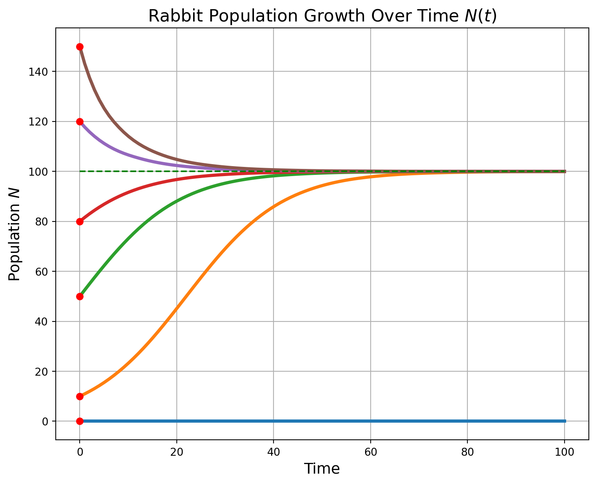
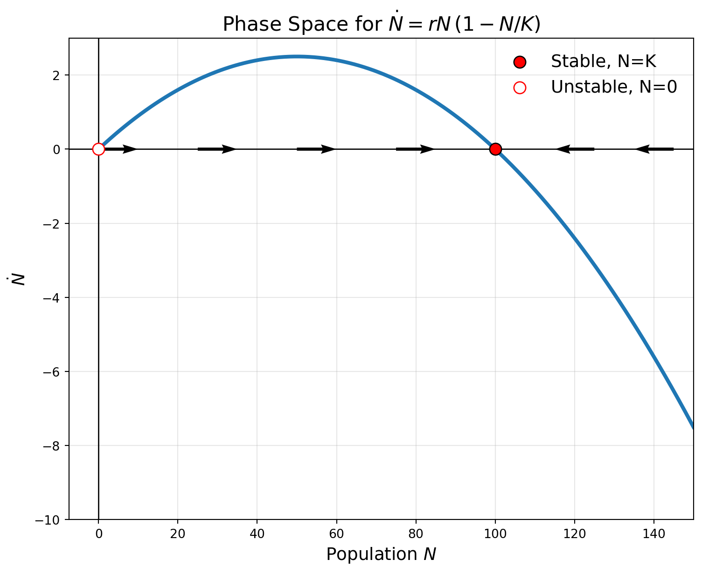
Let’s proceed to something more complex in the next section!
Solve for systems of ODEs
Now that we have a basic understanding of how to use solve_ivp, let’s tackle a more complex ODE system, containing more that one equation.
Recall:
Define the IVP problem: Define the ODE system and initial conditions.
Implement the ODE system: Write a function that computes and returns the derivatives.
Setup and call
solve_ivp: Specify the time span, initial conditions, and method.Extract and analyze the results
You can follow me along by opening the lorenz_system_students.ipynb notebook!
1. A “strange” example: Lorenz system
Edward Lorentz (1963) wanted to model atmospheric convection, with variables \(x(t)\), \(y(t)\), and \(z(t)\) related to fluid flow and temperature.
He ended up with a simplified model, a set of three first-order, coupled, nonlinear differential equations:
\[ \begin{align*} \dot{x} &= \Pr (y - x) \\ \dot{y} &= x (\text{Ra} - z) - y \\ \dot{z} &= xy - \beta z \end{align*} \]
The parameters \(\Pr\) (Prandtl), Ra (Rayleigh), and \(\beta\) are constants that depend on the physical properties of the fluid and the conditions of the system.
The story behind the Lorenz system is quite fascinating, I recommend reading about it! Check-out this Veritasium video: Chaos: The Science of the Butterfly Effect | Veritasium
2. Implementing the Lorenz system in Python
Let’s implement the Lorenz system using solve_ivp.
Let’s consider two initial conditions that are very close to each other: \[\mathbf{y_0} = [1.0, 1.0, 1.0]\] \[\mathbf{y_0'} = [1.0 + \varepsilon, 1.0, 1.0]\] with \(\varepsilon = 10^{-6}\).
2. Implementing the Lorenz system in Python
Let’s implement the Lorenz system using solve_ivp.
3. Setup the solver
Let’s implement the Lorenz system using solve_ivp.
import numpy as np
import matplotlib.pyplot as plt
from scipy.integrate import solve_ivp
def lorenz_system(t, y, Pr, Ra, beta):
x, y, z = y
dxdt = Pr * (y - x)
dydt = x * (Ra - z) - y
dzdt = x * y - beta * z
return [dxdt, dydt, dzdt]
Pr = 10.0
Ra = 1
beta = 8.0 / 3.0
y0 = np.array([1.0, 1.0, 1.0])
eps = 1e-6
y0_2 = np.array([1.0 + eps, 1.0, 1.0])
t_end = 50.0
t_span = (0.0, t_end)
t_eval = np.linspace(t_span[0], t_span[1], 10000)4. Solve the system and extract results
Let’s implement the Lorenz system using solve_ivp.
import numpy as np
import matplotlib.pyplot as plt
from scipy.integrate import solve_ivp
def lorenz_system(t, y, Pr, Ra, beta):
x, y, z = y
dxdt = Pr * (y - x)
dydt = x * (Ra - z) - y
dzdt = x * y - beta * z
return [dxdt, dydt, dzdt]
Pr = 10.0
Ra = 1
beta = 8.0 / 3.0
y0 = np.array([1.0, 1.0, 1.0])
eps = 1e-6
y0_2 = np.array([1.0 + eps, 1.0, 1.0])
t_end = 50.0
t_span = (0.0, t_end)
t_eval = np.linspace(t_span[0], t_span[1], 10000)
method = "RK45"
sol1 = solve_ivp(lorenz_system, t_span, y0, args=(Pr, Ra, beta), t_eval=t_eval, method=method, rtol=1e-9, atol=1e-12)
sol2 = solve_ivp(lorenz_system, t_span, y0_2, args=(Pr, Ra, beta), t_eval=t_eval, method=method, rtol=1e-9, atol=1e-12)
t = sol1.t
X1, Y1, Z1 = sol1.y
X2, Y2, Z2 = sol2.y5. Visualize the results
Visualizing the time evolution of the Lorenz system can reveal its peculiar behavior..
It’s time for you to complete the code and generate the plots! Go to the “exercise” cell and:
- Create a 3x1 subplot figure.
- Plot \(x(t)\), \(y(t)\), and \(z(t)\) for both initial conditions.
- Create a 1x3 subplot figure.
- Plot the phase portraits: \(x(t)\) vs \(z(t)\), \(x(t)\) vs \(y(t)\), and \(y(t)\) vs \(z(t)\) for both initial conditions. (Note: x-axis vs y-axis)
- Increase slowly Rayleigh number
Ra(1 - 25) and observe how the system’s behavior changes!
Minimal starter code is provided below:
Time series solutions
Phase space plots
Want to know more? I highly recommend checking out the following resources:
The Lorenz Attractor, a Paradigm for Chaos
Chaos: The Science of the Butterfly Effect | Veritasium
Summary
I might have convinced you that solve_ivp is a powerful tool to solve ODEs in Python, even for complex systems.
You should now be able to:
- Define and implement systems of ODEs in Python.
- Use
solve_ivpto solve these systems numerically. - Visualize and analyze the results effectively.

Only one thing is missing: what if we don’t know the parameters of the system? How can we estimate them from data?
Introduction to Model Fitting
Fitting mathematical models to experimental data using Python
Why Model Fitting?
- In many scientific and engineering applications, we have experimental data that we want to describe using mathematical models.
- Model fitting allows us to estimate the parameters of these models so that they best represent the observed data.
- This is crucial for making predictions, understanding underlying processes, and optimizing systems.

Python Libraries for Model Fitting
There are many libraries in Python that facilitate model fitting.
For this introduction, we will focus on Scipy’s curve_fit and least_squares function from the optimize module.
When to use curve_fit:
- One experiment at a time
- Fast and easy fitting
When to use least_squares:
- You have multiple experiments to fit simultaneously
- You want more control over the optimization process
Check the official documentation for more details.
Example: Fitting a Non-Linear Model
Let’s consider an example where we have experimental data that follows a non-linear relationship, such as an exponential decay model. \[ y(x) = e^{-\lambda x}\,\sin(\omega x) \]
We’ll recover the \(\lambda\) and \(\omega\) parameters of a damped sine model from noisy synthetic data.
You can open this example in a Jupyter notebook and follow me: model_fitting_students.ipynb.
Generating Synthetic Data
First , we generate synthetic data based on known parameters and add some noise to simulate experimental measurements.
import numpy as np
import matplotlib.pyplot as plt
from scipy.optimize import curve_fit
rng = np.random.default_rng(7)
lam_true, omega_true = 0.5, np.pi
t_exp = np.linspace(0, 10, 300)
y_true = np.exp(-lam_true * t_exp) * np.sin(omega_true * t_exp)
sigma = 0.03
y_exp = y_true + rng.normal(0, sigma, size=t_exp.size)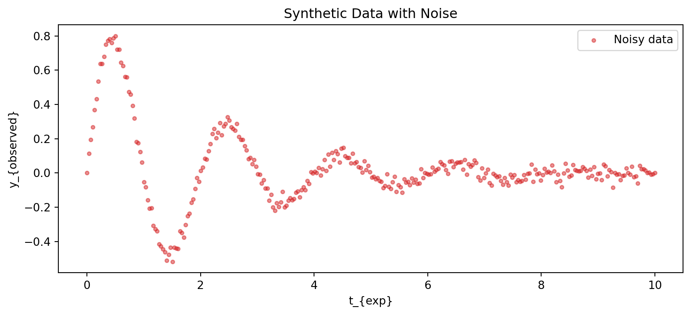
Fitting with least_squares:
Defining the Model and Residuals Function
To fit the model using least_squares, we first need to define the model function and the residuals function,
The residuals function computes the difference between the observed data and the model predictions, and must take as first argument a single array of parameters to optimize.
Then, additional arguments (like t_exp, y_exp, and sigma) can be passed via the args and kwargs parameters of least_squares.
Why? Look at the signature of least_squares!
Check the official documentation for more details.
Fitting with least_squares:
Performing the Fit
Now, we can use least_squares to estimate the parameters of our model based on the noisy data.
def damped_sine(t, lam, omega):
return np.exp(-lam * t) * np.sin(omega * t)
def residuals(x_to_optimize, t_exp, y_exp, sigma=0.03):
lam, omega = x_to_optimize
y_pred = damped_sine(t_exp, lam, omega)
return (y_exp - y_pred) / sigma
p0 = np.array([1.0, 1.0])
bounds = (np.array([0.0, 0.0]), np.array([np.inf, 5.0]))
res = least_squares(residuals, p0,
bounds=bounds,
args=(t_exp, y_exp),
kwargs={"sigma": sigma})
lam_fit, omega_fit = res.x 3. Visualizing the Results
Finally, we can visualize the fitted model against the noisy data and the true model.
def damped_sine(t, lam, omega):
return np.exp(-lam * t) * np.sin(omega * t)
def residuals(x_to_optimize, t_exp, y_exp, sigma=0.03):
lam, omega = x_to_optimize
y_pred = damped_sine(t_exp, lam, omega)
return (y_exp - y_pred) / sigma
p0 = np.array([1.0, 1.0])
bounds = (np.array([0.0, 0.0]), np.array([np.inf, 5.0]))
res = least_squares(residuals, p0,
bounds=bounds,
args=(t_exp, y_exp),
kwargs={"sigma": sigma})
lam_fit, omega_fit = res.x
y_fit = damped_sine(t_exp, lam_fit, omega_fit)
plt.figure()
plt.scatter(t_exp, y_exp, s=10, alpha=0.6, label="Noisy experimental data")
plt.plot(t_exp, y_fit, lw=2, label=f"Least squares fit: λ={lam_fit:.3f}, ω={omega_fit:.3f}")
plt.xlabel("t (Experimental Time)")
plt.ylabel("y (Observed Data)")
plt.title("Fit y = e^{-λt} sin(ωt) with least_squares")
plt.legend()
plt.tight_layout()
plt.show()Results
After running the fitting procedure, we obtain estimates for the parameters \(\lambda\) and \(\omega\):
Estimated λ = 0.50165 ± 5.15e-03 (true 0.5)
Estimated ω = 3.14557 ± 5.16e-03 (true 3.14159)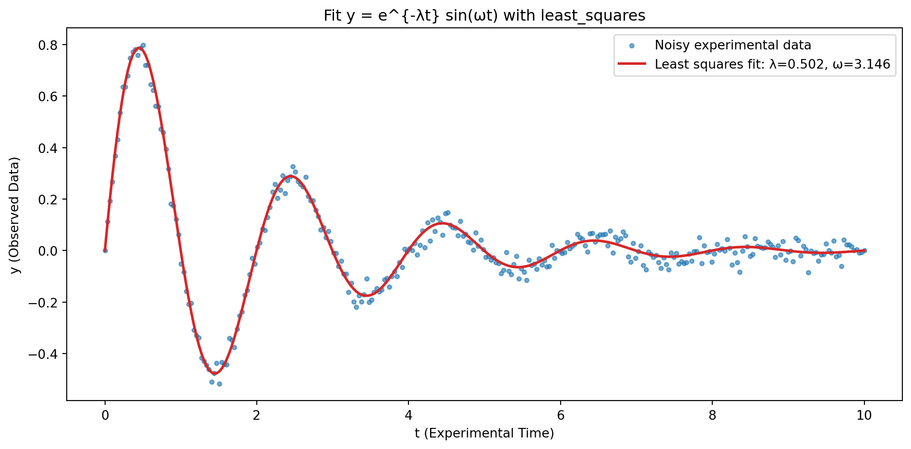
How to fit ODEs parameters?
Fitting parameters in ODE models follows the same approach, but with one additional step:
your predicted values will be obtained from
solve_ivpusing the parameters to be estimated!
Consider the following reaction scheme in two CSTRs in series: \[ \begin{aligned} \text{CSTR 1:} &\quad A \xrightarrow{k_1} B \\ \text{CSTR 2:} &\quad B \xrightarrow{k_2} C \end{aligned} \]
We want to estimate the kinetic parameters \(k_1\) and \(k_2\) from synthetic noisy data of species C concentration over time.
Setup the CSTR Model
\[ \frac{dC_{ik}}{dt} = \frac{(C_{i,k-1} - C_{ik})}{\tau} + r_{ik} \]
with \(i = A, B, C\) (species) and \(k = 1, 2\) (CSTRs).
Model states: \(y = ([C_{A1}, C_{B1}, C_{B2}, C_{C2}])\) with feed \(C_{A0}>0\), \(C_{B0}=C_{C0}=0\).
- CSTR 1: \(r_{A1} = k_1\,C_{A1}\) (first-order in \(A\))
- CSTR 2: \(r_{B2} = k_2\,C_{B2}^2\) (second-order in \(B\))
Now it’s your turn! Open the ode_fitting_students.ipynb notebook and implement the fitting of the CSTR model parameters using least_squares and solve_ivp.
Solution: CSTR Model
You can find the solution in the ode_fitting.ipynb notebook.
First, we define the ODE model for the CSTRs:
Solution: Residuals Function
Then, we write the residuals function that uses solve_ivp to simulate the model:
def dydt(t, y, k1, k2, CA0, tau):
CA1, CB1, CB2, CC2 = y
r1 = k1 * CA1
dCA1 = (CA0 - CA1)/tau - r1
dCB1 = (0.0 - CB1)/tau + r1
r2 = k2 * CB2**2
dCB2 = (CB1 - CB2)/tau - r2
dCC2 = (0.0 - CC2)/tau + r2
return [dCA1, dCB1, dCB2, dCC2]
def residuals(x_params, t_exp, y_exp, sigma=0.01, CA0=1.0, tau=1.0):
k1, k2 = x_params
y0 = [0.0, 0.0, 0.0, 0.0]
sol = solve_ivp(
dydt, (t_exp[0], t_exp[-1]), y0, t_eval=t_exp,
args=(k1, k2, CA0, tau))
y_pred = sol.y[3] # CC2(t)
return (y_exp - y_pred) / sigmaSolution: Performing the Fit
Finally, we perform the fitting using least_squares:
Solution: Visualizing the Results
We can visualize the fitted model against the noisy data:
y0_plot = [0.0, 0.0, 0.0, 0.0]
sol_fit = solve_ivp(
dydt, (t_exp[0], t_exp[-1]), y0_plot, t_eval=t_exp,
args=(k1_fit, k2_fit, CA0, tau),
)
C2_fit = sol_fit.y[3]
plt.figure()
plt.scatter(t_exp, C2_exp, s=12, alpha=0.7, label="Noisy experimental $C_2(t)$")
plt.plot(t_exp, C2_fit, lw=2, label=f"Fit: k1={k1_fit:.3f}, k2={k2_fit:.3f}", color="tab:red")
plt.xlabel("time")
plt.ylabel(r"$C_2$ (outlet of CSTR 2)")
plt.title("Two CSTRs in series — fit $k_1$ and $k_2$)")
plt.legend()
plt.tight_layout()
plt.show()Solution: Visualizing the Results
k1 = 0.8119 ± 0.0083 (true 0.8000)
k2 = 1.4291 ± 0.0473 (true 1.5000)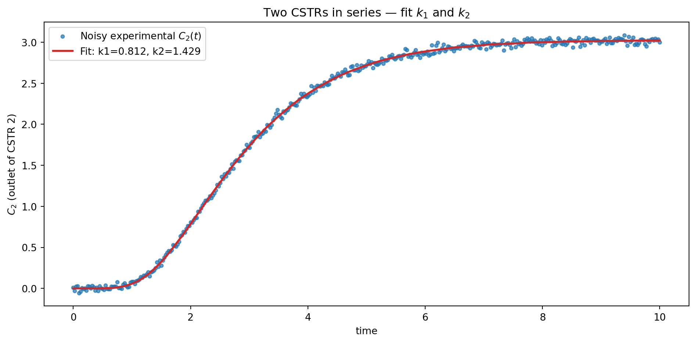
Conclusions
This crash course introduced several key concepts in process technology modeling and simulation using Python:
Python foundations
Basic syntax, NumPy arrays, and SciPy tools for scientific computing.Solving ODEs
Setting up and integrating process models withsolve_ivp.Parameter estimation
Fitting dynamic models to experimental data usingleast_squares.
By mastering these tools, you are now equipped to tackle complex process modeling problems.
Extra Resources
Extra materials and exercises are available to further enhance your understanding:
Happy coding!